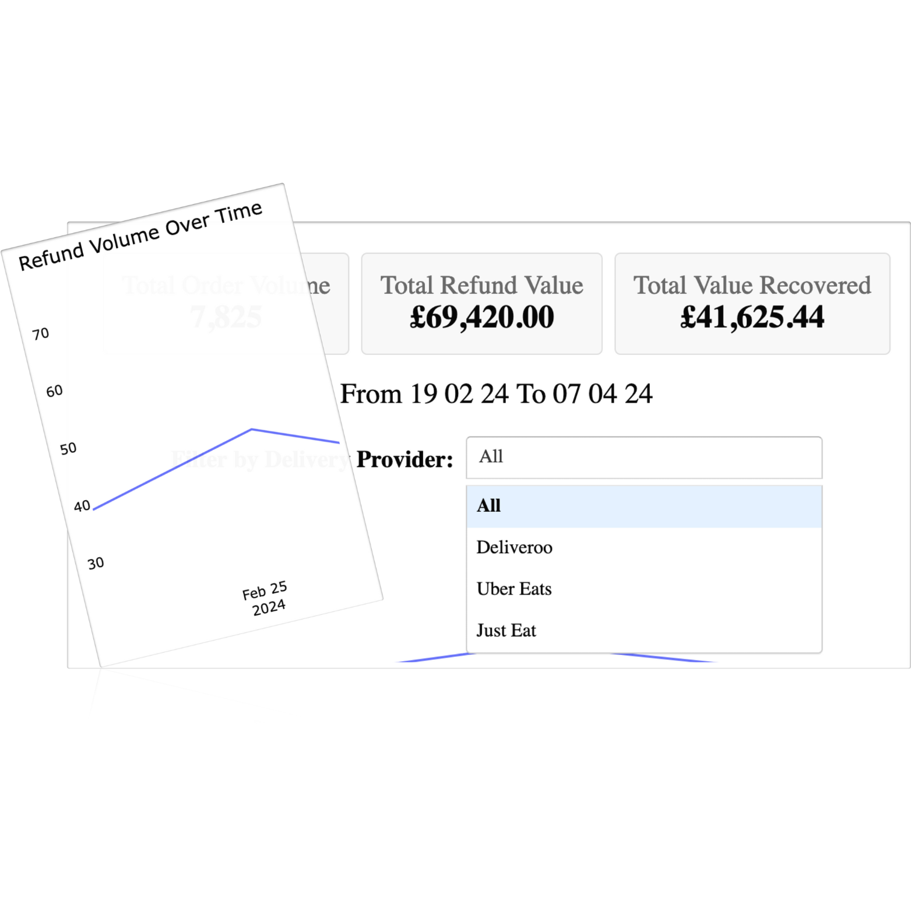
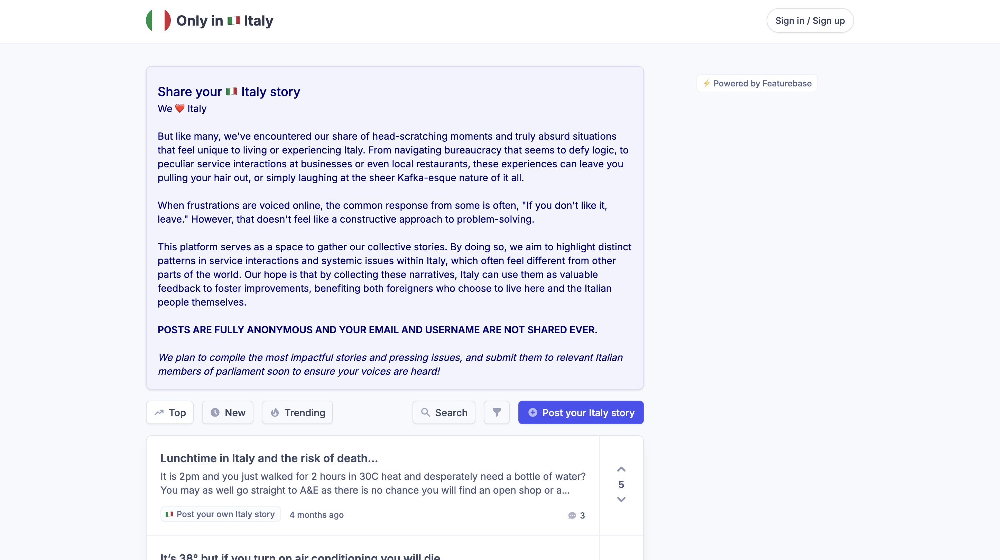

I've been on the ground floor of scaling businesses. I helped manage growth at Deliveroo during its 600% revenue growth, as Uber announced Uber Eats, and was a founding team member of Reef Technology UK, scaling its delivery-only kitchen network from 2 to over 100 locations in 20 months as revenues grew 920% YoY. I've also evaluated hundreds of business models as an early-stage, sector agnostic, VC.
Now, I use that experience to help businesses fix operational leaks and build systems that create predictable growth. I do this through consulting and by building profitable B2B SaaS software like DeliveryByte.
How I Can Help
I focus on three areas where I can deliver a return on your investment.
(I.) For Food Delivery & Last-Mile Logistics Operators
You're operating on thin margins in a large, competitive market. Every percentage point matters. I help you optimise your delivery channel performance. I help multi-location restaurants, QSRs, and last-mile logistics firms protect their profit and expand to new markets.
Service: In-app promotional and ads strategy, menu and store-front optimisation, revenue and customer performance analysis, and troubleshooting operational leaks. I also review and help renegotiate your commercial partnership terms with delivery apps and partners to improve your margins.
Past Example: At Wingstop, we identified that one of the best-selling item was misaligned with their core branding, leading to a simple but powerful shift in operational focus which led to a decrease in delivery service fees.
The result: A clear, data-driven plan to increase profitability and secure more favourable commercial agreements.
(II.) For SMEs (£2M-£20M/$2.7M-$27M Revenue) with Manual Processes
Your team is wasting hours on repetitive, manual, boring tasks. They are a silent growth killer, it slows you down and costs you money. I design and build custom AI-powered workflows to automate these processes.
Service: I'll analyse your current operations, identify the most impactful automation opportunities, and build a custom solution (typically in Python) to handle tasks like data entry, report generation, dynamic dashboards, customer support triage, market monitoring, or invoice processing.
My Own Proof: I built DeliveryByte, a SaaS that uses AI to automatically analyse refunds from delivery apps and recover over £1,300 ($1,760) a month for restaurant clients like Going Greek and Que Ricos Fresh Mexican Kitchen.
Result: Thousands of pounds/dollars saved in labour costs and hundreds of hours returned to your team to focus on high-value work.
(III.) For VC-Backed Startups (Series A+) Needing to Scale
You have product-market fit and funding, but your operations are under the pressure of growth. You need scalable systems, yesterday. Having managed deals and negotiated term sheets from the VC side, I help leadership navigate this phase with an investor's perspective.
Service: I act as an interim Head of Growth, Ops, or Revenue Operations. I come in to build the dashboards, define the KPIs, and implement the processes you need to scale from 10 to 100 people without everything catching fire.
Past Experience: I was on the ground during Deliveroo's 600%+ hyper-growth phase, scaling the UK's rider fleet. At Reef Technology, I helped scale the UK kitchen network from 2 to over 100 sites, launching global brands like Wendy's and MrBeast Burgers.
Result: You get a more resilient, efficient organisation that grows faster and negotiates from a position of strength with partners and investors.
Experience & Selected Deals
Reef Technology
As a founding team member of the UK business, I was instrumental in scaling the network from 2 to 100+ locations in 20 months, supporting 920% YoY revenue growth. I launched major brands like Wendy's and MrBeast Burger in the UK and negotiated commercial and legal terms with national chains.
Deliveroo
As part of the new market launch team, I developed an automated lead-generation workflow that acquired over 120 rider leads per day across 20+ cities without a marketing budget, fuelling the operational capacity for hyper-growth.
SFC Capital (formerly Startup Funding Club)
As an Investment Manager, I participated in rounds for companies like Axiom AI (YC-backed) and led a £1M ($1.35M) round for Mayku alongside notable investors. I also sourced and closed the largest single LP investment in the fund's history, doubling the previous record.
Selected Led/Contributed VC Deals:
- Mayku (£1M/$1.4M): Led round alongside Robin Klein (LocalGlobe) for a company creating desktop vacuum forming machines for designers and creators.
- Ember (£250K/$339K): Led the first round for a fintech startup automating accounting and tax for small business owners.
- Swytch (£800K/$1.1M): Led round for the creators of the world's smallest and lightest electric bike conversion kit.
- Axiom (YC-backed): Participated in the Seed round for a YC-backed startup that lets anyone automate web tasks without code.
- PPC Protect (£125K/$169.3K): Led the first round for a system that prevents click fraud for companies advertising on Google Ads.
- The Bunch (£149K/$201.8K): Led the first round for a fintech company that simplifies household bill splitting for students.
About Me
My career has been an ongoing obsession with one question: what makes a company built to last actually work? I started at Deliveroo, learning how to build and scale operations from the ground up during a period of explosive growth.
I then moved into Venture Capital at SFC Capital, where I analysed hundreds of business models a year. I saw firsthand why most startups fail and what the winners do differently. I learned to spot operational weaknesses and opportunities from an investor's perspective.
At Reef Technology, I combined those skills, taking on a senior commercial role where I negotiated deals with major brands (like Island Poké, Coco di Mama, GBK, MrBeast Burgers, Wendy's and many more), modelled expansion plans for multi-million dollar investments, and managed the operational performance of our delivery kitchen network.
Today, I run my own profitable B2B SaaS app, DeliveryByte, and use my experience to help other businesses grow.
Have a problem I might be able to solve?
P.S. If you play tennis, contact me anyway, let's play a match!
Recent Work
DeliveryByte (B2B SaaS)
AI-powered refund automation tool for restaurants. Built with Django/Heroku, saving clients £1,300 ($1,700) per month via LLM-driven workflows.
Visit Live SiteInteractive Restaurant Operations Dashboard
Flask/Plotly tool analysing delivery app performance. Reduced reporting time by 10+ hours/month.
 View DemoOnly in Italy
Community feedback board for sharing humorous and frustrating experiences about living in or traveling through Italy. Shared by Pieter Levels on x.com (23.4k views)
 Visit Live Site